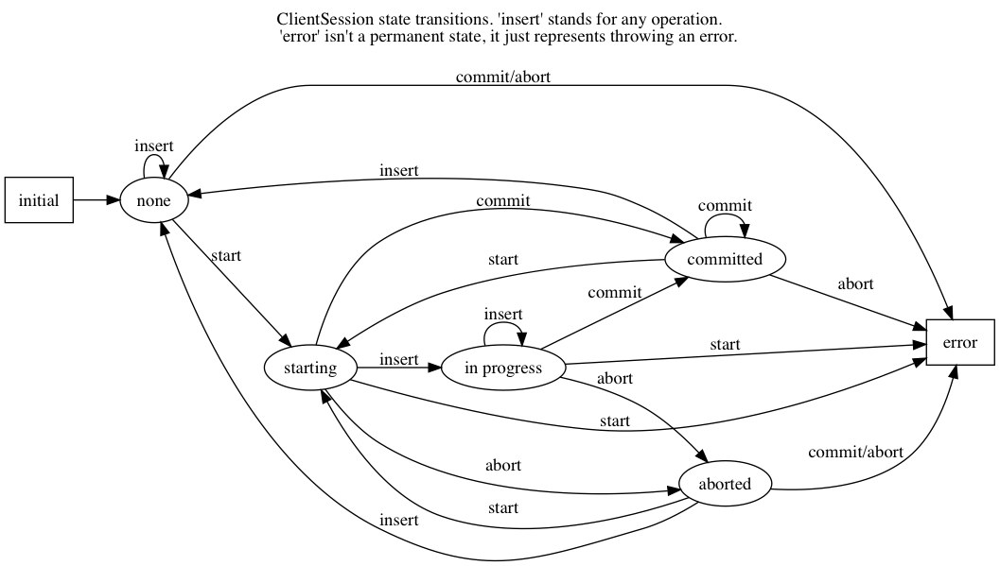

Transactions Specification
- Status: Accepted
- Minimum Server Version: 4.0
Abstract
Version 4.0 of the server introduces multi-statement transactions. This spec builds upon the Driver Sessions Specification to define how an application uses transactions and how a driver interacts with the server to implement transactions.
The API for transactions must be specified to ensure that all drivers and the mongo shell are consistent with each other, and to provide a natural interface for application developers and DBAs who use multi-statement transactions.
META
The keywords "MUST", "MUST NOT", "REQUIRED", "SHALL", "SHALL NOT", "SHOULD", "SHOULD NOT", "RECOMMENDED", "MAY", and "OPTIONAL" in this document are to be interpreted as described in RFC 2119.
Specification
Terms
This specification uses the terms defined in the Driver Sessions Specification and Retryable Writes Specification. Additional terms are defined below.
Resource Management Block
Some programming languages have a concept of a code block that automatically frees resources when control exits the block. Such a pattern is known as context managers, "using" statements, RAII, etc.. This spec refers to such a pattern as a resource management block, regardless of the programming language.
Read operation
Any CRUD method that uses a read preference. The listIndexes, listCollections, and listDatabases, and RunCommand helpers are also considered read operations.
Write operation
All operations that write and accept a ClientSession argument. All MongoClient, Database, Collection helpers that write including (but not limited to) creating, updating, or deleting databases, collections, indexes, and users. Aggregate (even with a write stage) is considered a read operation, see Aggregate with write stage is a read operation.
Retryable Error
An error considered retryable by the Retryable Writes Specification.
Command Error
A server response with ok:0. A server response with ok:1 and writeConcernError or writeErrors is not considered a command error.
Network Error
Any error or timeout that occurs while selecting a server or reading from or writing to a network socket.
Error Label
Starting in MongoDB 4.0, any command error may include a top level "errorLabels" field. The field contains an array of string error labels. Drivers may also add error labels to errors that they return.
Transient Transaction Error
Any command error that includes the "TransientTransactionError" error label in the "errorLabels" field. Any network error encountered running any command other than commitTransaction in a transaction. If a network error occurs while running the commitTransaction command then it is not known whether the transaction committed or not, and thus the "TransientTransactionError" label MUST NOT be added.
Naming variations
This specification defines names for new methods and types. To the extent possible you SHOULD use these names in your driver. However, where your driver's and/or language's naming conventions differ you SHOULD continue to use them instead. For example, you might use StartTransaction or start_transaction instead of startTransaction.
A non-exhaustive list of acceptable naming deviations are as follows:
- Using "maxCommitTimeMS" as an example, .NET would use "MaxCommitTime" where it's type is a TimeSpan structure that includes units. However, calling it "MaximumCommitTime" would not be acceptable.
Transaction API
Transactions are built on top of Driver Session API. Applications can run a transaction like this:
with client.start_session() as s:
s.start_transaction()
collection_one.insert_one(doc_one, session=s)
collection_two.insert_one(doc_two, session=s)
s.commit_transaction()
This section is an overview of the public API for transactions:
class TransactionOptions {
/**
* The readConcern to use for this transaction.
*/
Optional<ReadConcern> readConcern;
/**
* The writeConcern to use for this transaction.
*/
Optional<WriteConcern> writeConcern;
/**
* The readPreference to use for this transaction.
*/
Optional<ReadPreference> readPreference;
/**
* The maximum amount of time to allow a single commitTransaction
* command to run.
*
* NOTE: This option is deprecated in favor of timeoutMS.
*/
Optional<Int64> maxCommitTimeMS;
}
class SessionOptions {
/**
* The default TransactionOptions to use for transactions started
* on this session.
*/
Optional<TransactionOptions> defaultTransactionOptions;
// Options defined in other specifications...
}
interface ClientSession {
/**
* Starts a new transaction with the given options. This session's
* defaultTransactionOptions is used when options is omitted.
* Raises an error if this session is already in a transaction.
*
* The return type MAY be non-void if necessary to participate in
* the programming language's resource management block idiom. The
* type of the returned object, if any, MUST NOT be named
* Transaction, see "Why is there no Transaction object?"
*/
void startTransaction(Optional<TransactionOptions> options);
/**
* Commits the currently active transaction in this session.
* Raises an error if this session has no transaction.
*/
void commitTransaction();
/**
* Aborts the currently active transaction in this session.
* Raises an error if this session has no transaction.
*/
void abortTransaction();
/**
* Aborts any currently active transaction and ends this session.
* MUST NOT raise an error.
*/
void endSession();
// Methods defined in other specifications...
}
Each new member is documented below.
TransactionOptions
It is expected that the set of TransactionOptions will grow over time, TransactionOptions MUST be designed such that future options can be added without breaking backward compatibility.
readConcern
The readConcern to use for the first command, and only the first command, in a transaction. Server transactions are started lazily with the first command using this session. For supported values see Behavior of the readConcern field.
Note that the readConcern property is optional. The default value is NULL. If readConcern is NULL the value will be inherited from this session’s defaultTransactionOptions. If defaultTransactionOptions itself is NULL or the readConcern in defaultTransactionOptions is NULL, the readConcern is inherited from the MongoClient associated with this session.
If the user supplies an explicit readConcern via a method option, the driver MUST raise an error with the message "Cannot set read concern after starting a transaction." See Users cannot pass readConcern or writeConcern to operations in transactions.
writeConcern
The writeConcern to use for the commitTransaction and abortTransaction commands. Note that the writeConcern property is optional. The default value is NULL. If writeConcern is NULL the value will be inherited from this session’s defaultTransactionOptions. If defaultTransactionOptions itself is NULL or the writeConcern in defaultTransactionOptions is NULL, the writeConcern is inherited from the MongoClient associated with this session.
If the writeConcern is not the server default, then Drivers MUST add the writeConcern to the commitTransaction and abortTransaction commands. Drivers MUST NOT add the transaction’s writeConcern or any writeConcern inherited from the collection, database, or client to any preceding commands in the transaction.
If the user supplies an explicit writeConcern via a method option, the driver MUST raise an error with the message "Cannot set write concern after starting a transaction." See Users cannot pass readConcern or writeConcern to operations in transactions.
Drivers MUST raise an error if the user provides or if defaults would result in an unacknowledged writeConcern. The Driver Sessions spec disallows using unacknowledged writes in a session. The error message MUST contain "transactions do not support unacknowledged write concerns".
readPreference
The read preference to use for all read operations in this transaction.
Note that the readPreference property is optional. The default value is NULL. If readPreference is NULL the value will be inherited from this session’s defaultTransactionOptions. If defaultTransactionOptions itself is NULL or the readPreference in defaultTransactionOptions is NULL, the readPreference is inherited from the MongoClient associated with this session.
The transaction’s read preference MUST override all other user configurable read preferences, with the exception of drivers that allow an operation level read preference. In this case, the driver MUST respect the read preference specified by the user, allowing the server to report an error.
In MongoDB 4.0, transactions may only read from the primary. If a read is attempted and the transaction’s read preference is not Primary drivers MUST raise an error containing the string "read preference in a transaction must be primary". Drivers MUST NOT validate the read preference during write operations or in startTransaction. See Why is readPreference part of TransactionOptions?.
client = MongoClient("mongodb://host/?readPreference=nearest")
coll = client.db.test
with client.start_session() as s:
with s.start_transaction():
coll.insert_one({}, session=s)
coll.find_one(session=s) # Error: "read preference in a transaction must be primary"
In the future, we might relax this restriction and allow any read preference on a transaction.
maxCommitTimeMS
NOTE: This option is deprecated in favor of timeoutMS.
The maximum amount of time to allow a single commitTransaction command to run.
This option is only sent with the commitTransaction command(s) and only if the caller explicitly provides a value. The default is to not send a value.
Note, this option is an alias for the maxTimeMS commitTransaction command option.
SessionOptions changes
defaultTransactionOptions
The default TransactionOptions to use for transactions started on this session.
ClientSession changes
ClientSession is in one of five states: "no transaction", "starting transaction", "transaction in progress", "transaction committed", and "transaction aborted". It transitions among these states according to the following diagram:
 (GraphViz source)
When a ClientSession is created it starts in the "no transaction" state. Starting, committing, and aborting a transaction transitions the session between the "starting transaction", "transaction in progress", "transaction committed", and "transaction aborted" states. If the session is in the "transaction aborted" or "transaction committed" state, then any operation using the session (besides commitTransaction and abortTransaction) MUST reset the session state to "no transaction".
Note that "error" is not a state, it represents throwing an error due to an invalid operation. When such errors are thrown the session state is unchanged.
Client-side errors MUST NOT change transaction state. For example, if an invalid key or an excessively large document is provided by the application to an insert when the transaction state is "starting transaction", the transaction state MUST remain "starting transaction". If the same situation occurs when the transaction state is "transaction in progress", the state MUST remain "transaction in progress".
startTransaction
This method starts a new transaction on this session with the given TransactionOptions. When options is omitted or if particular options are not specified, drivers will use the defaultTransactionOptions from ClientSession.options or inherit them from the session's client, as described in the text above for each option. This session is in the "starting transaction" state after this method returns.
If this session is in the "starting transaction " or "transaction in progress" state, then Drivers MUST raise an error containing the message "Transaction already in progress" without modifying any session state.
startTransaction SHOULD report an error if the driver can detect that transactions are not supported by the deployment. A deployment does not support transactions when the deployment does not support sessions, or maxWireVersion < 7, or the maxWireVersion < 8 and the topology type is Sharded, see How to Tell Whether a Connection Supports Sessions. Note that checking the maxWireVersion does not guarantee that the deployment supports transactions, for example a MongoDB 4.0 replica set using MMAPv1 will report maxWireVersion 7 but does not support transactions. In this case, Drivers rely on the deployment to report an error when a transaction is started.
Drivers MUST increment the txnNumber for the corresponding server session.
In programming languages that support resource management blocks, startTransaction MAY be used to initiate such a block:
with client.start_session() as s:
with s.start_transaction():
collection_one.insert_one(doc1, session=s)
s.commit_transaction()
The exact API SHOULD match the idioms of the programming language. Depending on the conventions of the programming language, exiting the block without calling commitTransaction MAY automatically abort the transaction, or MAY abort the transaction when exiting due to an exception and commit it when exiting normally. The driver MUST NOT automatically commit the transaction when exiting the block due to an exception. This means that for languages that use an RAII pattern for resource management blocks, if object destruction can't tell if the containing scope has exited normally or for an exception, object destruction MUST NOT automatically commit the transaction.
If the driver returns a type to support resource management blocks, the type MUST NOT be named "Transaction". The type MAY be named "TransactionContext", "TransactionScopeGuard" or something similar for your language. See Why is there no Transaction object?
commitTransaction
This method commits the currently active transaction on this session. Drivers MUST run a commitTransaction command with the writeConcern and, if configured, the maxCommitTimeMS from TransactionOptions. Drivers MUST report an error when the command fails or the command succeeds but contains a writeConcernError. This session is in the "transaction committed" state after this method returns — even on error.
If this session is in the "no transaction" state, then Drivers MUST raise an error containing the message "No transaction started".
If this session is in the "transaction aborted" state, then Drivers MUST raise an error containing the message "Cannot call commitTransaction after calling abortTransaction".
If this session is already in the "transaction committed" state, then Drivers MUST re-run the previous commitTransaction.
It is valid to call commitTransaction when the session is in the "starting transaction" or "transaction in progress" state. When the session is in the "starting transaction" state, meaning no operations have been performed on this transaction, drivers MUST NOT run the commitTransaction command.
commitTransaction is a retryable write command. Drivers MUST retry once after commitTransaction fails with a retryable error, including a handshake network error, according to the Retryable Writes Specification, regardless of whether retryWrites is set on the MongoClient or not.
When commitTransaction is retried, either by the driver's internal retry logic or explicitly by the user calling
commitTransaction again, drivers MUST apply w: majority to the write concern of the commitTransaction command. If the
transaction is using a writeConcern that is not the server default (i.e. specified via
TransactionOptions during the startTransaction call or otherwise inherited), any other write concern options (e.g.
wtimeout) MUST be left as-is when applying w: majority. Finally, if the modified write concern does not include a
wtimeout value, drivers MUST also apply wtimeout: 10000 to the write concern in order to avoid waiting forever (or
until a socket timeout) if the majority write concern cannot be satisfied. See
Majority write concern is used when retrying commitTransaction.
Drivers MUST add error labels to certain errors when commitTransaction fails. See the Error reporting changes and Error Labels sections for a precise description.
abortTransaction
This method aborts the currently active transaction on this session. Drivers MUST run an abortTransaction command with the transaction’s writeConcern. When this method completes the session moves to the "transaction aborted" state.
It is only valid to call abortTransaction when the session is in the "starting transaction" or "transaction in progress" state, otherwise drivers MUST raise an error without modifying transaction state.
If this session is in the "no transaction" state, then drivers MUST raise an error containing the message "No transaction started".
If this session is in the "transaction committed" state, then drivers MUST raise an error containing the message "Cannot call abortTransaction after calling commitTransaction".
If this session is already in the "transaction aborted" state, then drivers MUST raise an error containing the message "Cannot call abortTransaction twice".
It is valid to call abortTransaction when the session is in the "starting transaction" or "transaction in progress" state. When the session is in the "starting transaction" state, meaning, no operations have been performed on this transaction, drivers MUST NOT run the abortTransaction command.
abortTransaction is a retryable write command. Drivers MUST retry after abortTransaction fails with a retryable error according to the Retryable Writes Specification, including a handshake network error, regardless of whether retryWrites is set on the MongoClient or not.
If the operation times out or fails with a non-retryable error, drivers MUST ignore all errors from the abortTransaction command. Errors from abortTransaction are meaningless to the application because they cannot do anything to recover from the error. The transaction will ultimately be aborted by the server anyway either upon reaching an age limit or when the application starts a new transaction on this session, see Drivers ignore all abortTransaction errors.
endSession changes
This method ends a ClientSession. Drivers MUST call abortTransaction if this session is in the "transaction in progress" state in order to release resources on the server. Drivers MUST ignore any errors raised by abortTransaction while ending a session.
Error reporting changes
This spec introduces the concept of an "error label". Which labels are applied to an error may be communicated from the server to the client, or determined client-side. Any error reported by the driver in response to a server error, server selection error, or network error MUST have an API for determining whether it has a given label. In programming languages that use class inheritance hierarchies for exceptions, the presence of an error label MUST NOT affect an exception's class. Error labels MUST be expressed as a collection of text strings, and it MUST be possible for applications to check if an error has a label that is not yet specified in MongoDB 4.0. Drivers MAY define constants for error label strings that are known at this time.
Drivers MAY implement an error label API similar to the following:
try:
session.commit_transaction()
except (OperationFailure, ConnectionFailure) as exc:
if exc.has_error_label("UnknownTransactionCommitResult"):
print("tried to commit, don't know the outcome")
Drivers MAY expose the list of all error labels for an exception object.
Drivers MUST add the error label "TransientTransactionError" to network errors thrown in a transaction except for network errors thrown during commitTransaction.
Transactions Wire Protocol
The server requires each operation executed within a transaction to provide an lsid and txnNumber in its command
document. Each field is obtained from the ClientSession object passed to the operation from the application. Drivers
will be responsible for maintaining a monotonically increasing transaction number for each ServerSession used by a
ClientSession object. The txnNumber is incremented by the call to startTransaction and remains the same for all
commands in the transaction.
Drivers that pool ServerSessions MUST preserve the transaction number when reusing a server session from the pool with a new ClientSession (this can be tracked as another property on the driver's object for the server session).
Drivers MUST ensure that each transaction specifies a transaction number larger than any previously used transaction number for its session ID.
Constructing commands within a transaction
Behavior of the startTransaction field
The first command within a multi-statement transaction MUST include startTransaction:true. Subsequent commands MUST
NOT include the startTransaction field.
Behavior of the autocommit field
All operations within a multi-statement transaction (including commitTransaction and abortTransaction) MUST include
autocommit:false, to distinguish them from single-statement retryable writes.
Behavior of the readConcern field
Any command that marks the beginning of a transaction MAY include a readConcern argument with an optional level and
afterClusterTime fields. Read concern level 'local', 'majority', and 'snapshot' are all supported, although they will
all have the same behavior as "snapshot" in MongoDB 4.0. To support causal consistency, if readConcern
afterClusterTime is specified, then the server will ensure that the transaction’s read timestamp is after the
afterClusterTime.
All commands of a multi-statement transaction subsequent to the initial command MUST NOT specify a readConcern, since
the readConcern argument is only needed to establish the transaction’s read timestamp. If a readConcern argument is
specified on a subsequent (non-initial) command, the server will return an error.
Read concern level "snapshot" is new in MongoDB 4.0 and can only be used when starting a transaction. The server will return an error if read concern level "snapshot" is specified on a command that is not the start of a transaction. Drivers MUST rely on the server to report an error if read concern level snapshot is used incorrectly.
Behavior of the writeConcern field
The commitTransaction and abortTransaction commands are the only commands of a multi-statement transaction that allow a
writeConcern argument. If a writeConcern argument is given on any other command of a transaction, the server will
return an error. The writeConcern argument of the commitTransaction and abortTransaction commands has semantics
analogous to existing write commands.
Behavior of the recoveryToken field
Only included for sharded transactions and only when running a commitTransaction or abortTransaction command. See the recoveryToken field section for more info.
Constructing the first command within a transaction
When constructing the first command within a transaction, drivers MUST add the lsid, txnNumber, startTransaction,
and autocommit fields.
Drivers MUST include the transaction's readConcern in the first command in a transaction if and only if the readConcern is supplied and not the server's default. The readConcern MUST NOT be inherited from the collection, database, or client associated with the driver method that invokes the first command.
Drivers MUST NOT add to subsequent commands the readConcern from the transaction or any readConcern inherited from the collection, database, or client.
This is an example of an insert command that begins a server transaction:
{
insert : "test",
documents : [{}],
lsid : { id : <UUID> }
txnNumber: NumberLong(1),
// The "level" is optional, supported values are "local", "majority"
// and "snapshot". "afterClusterTime" is only present in causally
// consistent sessions.
readConcern : {
level : "snapshot",
afterClusterTime : Timestamp(42,1)
},
startTransaction : true,
autocommit : false
}
This command uses the readConcern set on the transaction's TransactionOptions during the startTransaction call. It is
not inherited from a client, database, or collection at the time of the first command.
The session transitions to the "transaction in progress" state after completing the first command within a transaction — even on error.
Constructing any other command within a transaction
When constructing any other command within a transaction, drivers MUST add the lsid, txnNumber, and autocommit
fields. Drivers MUST NOT automatically add the writeConcern, readConcern, or startTransaction fields. This is an
example of a find command within a transaction:
{
find : "test",
filter : {},
lsid : { id : <UUID> }
txnNumber : NumberLong(1),
autocommit : false
}
Generic RunCommand helper within a transaction
If your driver offers a generic RunCommand method on your database object, the driver MUST add the lsid, autocommit,
and txnNumber fields. If the RunCommand operation is the first operation in a transaction then the driver MUST also
add the startTransaction and readConcern fields. A driver MUST do this without modifying any data supplied by the
application (e.g. the command document passed to RunCommand). If the user supplies an explicit readConcern as an
argument to the runCommand method in a transaction, the client MUST raise an error with the message "Cannot set read
concern after starting a transaction."
The RunCommand method is considered a read operation and MUST use the transaction’s read preference.
The behavior is not defined if the command document passed to RunCommand already contains some of the transaction fields.
Interaction with Causal Consistency
Drivers MUST add readConcern.afterClusterTime to the command that starts a transaction in a causally consistent
session -- even if the command is a write. Drivers MUST NOT add readConcern.afterClusterTime to subsequent commands in
a transaction.
Interaction with Retryable Writes
In MongoDB 4.0 the only supported retryable write commands within a transaction are commitTransaction and abortTransaction. Therefore drivers MUST NOT retry write commands within transactions even when retryWrites has been enabled on the MongoClient. In addition, drivers MUST NOT add the RetryableWriteError label to any error that occurs during a write command within a transaction (excepting commitTransation and abortTransaction), even when retryWrites has been enabled on the MongoClient.
Drivers MUST retry the commitTransaction and abortTransaction commands even when retryWrites has been disabled on the MongoClient. commitTransaction and abortTransaction are retryable write commands and MUST be retried according to the Retryable Writes Specification.
Retryable writes and transactions both use the txnNumber associated with a ServerSession. For retryable writes,
txnNumber would normally increment before each retryable command, whereas in a transaction, the txnNumber is
incremented at the start and then stays constant, even for retryable operations within the transaction. When executing
the commitTransaction and abortTransaction commands within a transaction drivers MUST use the same txnNumber used for
all preceding commands in the transaction.
Server Commands
commitTransaction
The commitTransaction server command has the following format:
{
commitTransaction : 1,
lsid : { id : <UUID> },
txnNumber : <Int64>,
autocommit : false,
writeConcern : {...},
maxTimeMS: <Int64>,
recoveryToken : {...}
}
abortTransaction
The abortTransaction server command has the following format:
{
abortTransaction : 1,
lsid : { id : <UUID> },
txnNumber : <Int64>,
autocommit : false,
writeConcern : {...},
recoveryToken : {...}
}
Both commands MUST be sent to the admin database.
The server response has the following format:
{ ok : 1 }
In case of an error, the server response has the following format:
{ ok : 0, errmsg : "...", code : <Number>, errorLabels: ["Label"] }
In case of a write concern error, the server response has the following format:
{ ok : 1, writeConcernError: {code: <Number>, errmsg : "..."} }
Sharded Transactions
MongoDB 4.2 (maxWireVersion 8) introduces support for sharded transactions. Sharded transactions support all of the same
features as single replica set transaction but introduce two new driver concepts: mongos pinning and the recoveryToken
field.
Mongos Pinning
Drivers MUST send all commands for a single transaction to the same mongos (excluding retries of commitTransaction and abortTransaction).
After the driver selects a mongos for the first command within a transaction, the driver MUST pin the ClientSession to the selected mongos. Drivers MUST send all subsequent commands that are part of the same transaction (excluding certain retries of commitTransaction and abortTransaction) to the same mongos.
When to unpin
Drivers MUST unpin a ClientSession in the following situations:
- The transaction is aborted. The session MUST be unpinned regardless of whether or the
abortTransactioncommand succeeds or fails, or was executed at all. If the operation fails with a retryable error, the session MUST be unpinned before performing server selection for the retry. - Any operation in the transaction, including
commitTransactionfails with a TransientTransactionError. Transient errors indicate that the transaction in question has already been aborted or that the pinnned mongos is down/unavailable. Unpinning the session ensures that a subsequentabortTransaction(orcommitTransaction) does not block waiting on a server that is unreachable. - Any
commitTransactionattempt fails with anUnknownTransactionCommitResulterror label. If the error is also considered retryable, the session MUST be unpinned before performing server selection for the retry. - A new transaction is started on the ClientSession after the previous transaction has been committed. The session MUST be unpinned before performing server selection for the first operation of the new transaction.
- A non-transactional operation is performed using the ClientSession. The session MUST be unpinned before performing server selection for the operation.
Note that committing a transaction on a pinned ClientSession MUST NOT unpin the session as commitTransaction may be
called multiple times.
Pinning in Load Balancer Mode
See the Load Balancer Specification for details.
recoveryToken field
The recoveryToken field enables the driver to recover a sharded transaction's outcome on a new mongos when the
original mongos is no longer available.1
Every successful (ok:1) command response in a sharded transaction includes a recoveryToken field. Drivers MUST track
the most recently received recoveryToken field and MUST append this field to any subsequent commitTransaction or
abortTransaction commands. Tracking the most recently returned recoveryToken allows the server to update the
recoveryToken mid-transaction if needed.
Drivers MUST clear a session's cached recoveryToken when transitioning to the "no transaction" or "starting
transaction" state.
Drivers can safely assume that the recoveryToken field is always a BSON document but drivers MUST NOT modify the
contents of the document.
Error Reporting and Retrying Transactions
Error Labels
Starting in MongoDB 4.0, any command error may include a top level "errorLabels" field. The field contains an array of string error labels.
TransientTransactionError
Any command error that includes the "TransientTransactionError" error label in the "errorLabels" field. Any network error or server selection error encountered running any command besides commitTransaction in a transaction. In the case of command errors, the server adds the label; in the case of network errors or server selection errors where the client receives no server reply, the client adds the label.
Retrying transactions that fail with TransientTransactionError
If an exception with the "TransientTransactionError" label is thrown, an application can retry the entire transaction from the beginning with a reasonable expectation that it will succeed. For example:
def run_transaction(client):
with client.start_session() as s:
with s.start_transaction():
collection_one.insert_one(doc1, session=s)
collection_two.insert_one(doc2, session=s)
while True:
try:
return run_transaction(client)
except (OperationFailure, ConnectionFailure) as exc:
if exc.has_error_label("TransientTransactionError"):
print("Transient transaction error, retrying...")
continue
raise
In the above example, a transaction will never be committed twice. The retry loop ends when the transaction commits successfully or the transaction fails with a non-transient error.
An example of a non-transient transaction error is DuplicateKeyError, which causes the server to abort the transaction. Retrying a transaction that causes a DuplicateKeyError will again (likely) abort the transaction, therefore such an error is not labeled "transient."
UnknownTransactionCommitResult
The commitTransaction command is considered a retryable write. The driver will automatically retry the commitTransaction after a retryable error. Although this adds a layer of protection, the driver’s retry attempt of a commitTransaction may again fail with a retryable error. In that case, both the driver and the application do not know the state of the transaction.
The driver MUST add the "UnknownTransactionCommitResult" error label when commitTransaction fails with a server selection error, network error, retryable writes error, MaxTimeMSExpired error, or write concern failed / timeout. (See A server selection error is labeled UnknownTransactionCommitResult for justification.) The approximate meaning of the UnknownTransactionCommitResult label is, "We don't know if your commit has satisfied the provided write concern." The only write concern errors that are not labeled with "UnknownTransactionCommitResult" are CannotSatisfyWriteConcern (which will be renamed to the more precise UnsatisfiableWriteConcern in 4.2, while preserving the current error code) and UnknownReplWriteConcern. These errors codes mean that the provided write concern is not valid and therefore a retry attempt would fail with the same error.
In the case that the commitTransaction fails with a retryable writes error, that error will have both an UnknownTransactionCommitResult label and a RetryableWriteError label. This is currently the only scenario in which an error can be assigned two error labels.
Retrying commitTransaction
If an exception with this label is thrown, an application can safely call commitTransaction again. If this attempt succeeds it means the transaction has committed with the provided write concern. If this attempt fails it may also have the "UnknownTransactionCommitResult" error label. For example:
def run_transaction_and_retry_commit(client):
with client.start_session() as s:
with s.start_transaction():
collection_one.insert_one(doc1, session=s)
collection_two.insert_one(doc2, session=s)
while True:
try:
s.commit_transaction()
break
except (OperationFailure, ConnectionFailure) as exc:
if exc.has_error_label("UnknownTransactionCommitResult"):
print("Unknown commit result, retrying...")
continue
raise
while True:
try:
return run_transaction_and_retry_commit(client)
except (OperationFailure, ConnectionFailure) as exc:
if exc.has_error_label("TransientTransactionError"):
print("Transient transaction error, retrying...")
continue
raise
Handling command errors
Drivers MUST document that command errors inside a transaction may abort the transaction on the server. An attempt to
commit such transaction will be rejected with NoSuchTransaction error.
Test Plan
See the README for tests.
The Python driver serves as a reference implementation.
Design Rationale
The design of this specification builds on the Driver Sessions Specification and modifies the driver API as little as possible.
Drivers will rely on the server to yield an error if an unsupported command is executed within a transaction. This will free drivers from having to maintain a list of supported operations and also allow for forward compatibility when future server versions begin to support transactions for additional commands.
Drivers ignore all abortTransaction errors
If the driver has cleared its client-side transaction state, then the next operation it performs will be in a new transaction or no transaction, which will cause any lingering transaction state on the server (associated with this session) to abort. Therefore abortTransaction can be considered fail-safe, and raising an exception from it only complicates application code. Applications would have to wrap abortTransaction in an exception-handling block, but have no useful action to perform in response to the error.
abortTransaction does, however, raise an error if there is no transaction in progress. We had considered making this situation raise no error, as well. However, we want to raise an error from abortTransaction if there is no transaction, because it discourages an antipattern like this:
s.start_transaction()
try:
coll.insert_one({}, session=s)
s.commit_transaction()
except:
# We don't know if it was the insert_one, the commit,
# or some other operation that failed, so we must not
# commit the transaction.
s.abort_transaction() # Raises a client-side error
If a user puts "commit" in the same exception handling block as the other operations in the transaction, they don't know whether to retry the commit or the whole transaction on error. We want such code to raise an exception. One chance we have to do that is if a commit fails with a network error and enters the exception handling block, where abortTransaction throws "Cannot call abortTransaction after commitTransaction".
Drivers add the "TransientTransactionError" label to network errors
When any non-commitTransaction command fails with a network error within a transaction Drivers add the "TransientTransactionError" label because the client doesn't know if it has modified data in the transaction or not. Therefore it must abort and retry the entire transaction to be certain it has executed each command in the transaction exactly once.
Adding the "TransientTransactionError" label allows applications to use the the same error label API for both network errors and command errors. This also allows applications to distinguish between a network error that occurs within a transaction from a network error that occurs while committing a transaction.
Transactions in GridFS
The GridFS spec has not been updated to support sessions, however some drivers have already implemented support for it on their own. When the GridFS spec has been updated to support sessions, then drivers that implement that spec MUST also support transactions in GridFS because all APIs that allow sessions MUST support transactions.
Drivers that have already implemented session support in GridFS MUST also support transactions in GridFS. Drivers that have not implemented ClientSession support in GridFS are not required to support transactions (or sessions) in GridFS.
This spec does not require all drivers to implement transaction support in GridFS because transactions in GridFS are not very useful: transactions in 4.0 are too limited in time and space to operate on large GridFS files. Additionally, GridFS as specified already has some basic guarantees that make transactions less necessary: files are immutable and they are created "atomically", from the primary's perspective, because the file entry is only saved after all chunks are uploaded.
Causal Consistency with RunCommand helper
Causal Consistency alone only applies to commands that read, and we don't want to parse the document passed to
runCommand to see if it's a command that reads. In a transaction, however, any command at all that starts a transaction
must include afterClusterTime, so we can add afterClusterTime to the document passed to runCommand without adding
per-command special logic to runCommand.
Calling commitTransaction with the generic runCommand helper is undefined behavior
Applications should only use the ClientSession API to manage transactions. Applications should not use a generic runCommand helper to run the commitTransaction or abortTransaction commands directly. This spec does not define the behavior of calling such commands, consistent with other drivers specifications that do not define the behavior of calling directly commands for which helper methods are available The purpose of the generic runCommand method is to execute a command directly with minimum additional client-side logic.
Dependencies
This specification depends on:
Backwards Compatibility
The API changes to support transactions extend the existing API but do not introduce any backward breaking changes. Existing programs that do not make use of transactions will continue to compile and run correctly.
Reference Implementation
The Python driver serves as a reference implementation.
Future work
-
Support retryable writes within a transaction.
-
Support transactions on secondaries. In this case, drivers would be required to pin a transaction to the server selected for the initial operation. All subsequent operations in the transaction would go to the pinned server.
-
Support for transactions that read from multiple nodes in a replica set. One interesting use case would be to run a single transaction that performs low-latency reads with readPreference "nearest" followed by some writes.
-
Support for unacknowledged transaction commits. This might be useful when data consistency is paramount but durability is optional. Imagine a system that increments two counters in two different collections. The system may want to use transactions to guarantee that both counters are always incremented together or not at all.
Justifications
Why is there no Transaction object?
In order to use transactions an application already has to create and manage a ClientSession object. Introducing a Transaction object would result in another object that the application needs to manage. Moreover, a server session can only have a single transaction in progress at a time. We chose not to introduce a public Transaction object so that applications only need to manage a single object and to more closely mirror how transactions work on the server.
Some drivers' startTransaction methods will return an object as part of the language's resource management block protocol. The object returned by startTransaction MUST NOT be named Transaction, in order to reserve that name for some future API extension. Additionally, by avoiding the name Transaction, we prevent users from thinking they can run multiple transactions in a session. Finally, we avoid the temptation to diverge from this spec's API by adding a commit() or abort() method to the object returned by startTransaction. Committing and aborting a transaction is the responsibility of the ClientSession object in all drivers.
Why is readPreference part of TransactionOptions?
Providing a read preference for the entire transaction makes it easier for applications that use one or more non-primary read preferences for non-transactional reads to run transactions under a single, primary read-preference. Applications only need to set primary read preference on the transaction instead of changing the read preference of all operations.
Because primary is the only read preference allowed with transactions in MongoDB 4.0, this specification could have omitted TransactionOptions.readPreference, or at least defaulted the read preference to primary instead of inheriting the client's read preference. However, this would have required a breaking change circa MongoDB 4.2 when we introduce secondary reads in transactions: TransactionOptions will inherit the client's read preference in 4.2, so for the sake of future-compatibility, TransactionOptions inherits the client's read preference now.
We considered defaulting TransactionOptions.readPreference to primary in 4.0, overriding the client's read preference by default for convenience. However, for consistency with other options-inheritance rules in our specifications, transactions MUST inherit the client's read preference.
In MongoDB 4.0, the error "read preference in a transaction must be primary" is thrown whenever the application attempts a read operation in a transaction with a non-primary read preference. We considered throwing this error from startTransaction instead, to make the error more deterministic and reduce the performance burden of re-checking the TransactionOptions on each operation. However, this behavior will have to change when we introduce secondary reads in transactions. There will then be new error scenarios, such as a transaction with secondary reads followed by a write. It won't be possible in the future for startTransaction to check that the read preference is correct for all operations the application will perform in the transaction. Therefore, we specify now that the readPreference must be checked per-operation. (However, we have not completely planned how read preference validation will behave in MongoDB 4.2.)
Users cannot pass readConcern or writeConcern to operations in transactions
For drivers that allow readConcern and/or writeConcern to be passed to a particular operation, If the driver did not prohibit the readConcern parameter to methods in a transaction, the following code would be ambiguous:
client = MongoClient("mongodb://localhost/?readConcernLevel=majority")
with client.start_session() as s:
# Transaction uses readConcern majority.
with s.start_transaction():
# The first command in a transaction. Which readConcern?
client.db.collection.distinct(
readConcern={'level': 'snapshot'},
session=s)
In this scenario, the driver must choose which of the two possible readConcerns to use for the first command in the transaction. The server will accept either without error, so the ambiguity MUST be resolved by raising a client-side error.
We could specify that if a user passes an explicit writeConcern to an operation in a transaction, that the driver passes this writeConcern to the server. The server correctly returns an error in this scenario; there is not the same ambiguity with an explicit writeConcern as there is with an explicit readConcern passed to the first operation in a transaction. For consistency, however, we specify that an explicit writeConcern passed to an operation in a transaction provokes a client-side error, the same as for readConcern.
Another alternative is to silently ignore the readConcern and/or writeConcern that the user has explicitly provided to a particular operation in a transaction. This would be a surprising and undetectable deviation from the user's explicit intent.
On the other hand, if a user configures the write concern of a client, database, or collection, and then configures the same option on a transaction, the transaction's configuration overrides the inherited configuration:
client = MongoClient("mongodb://localhost/?w=majority")
with client.start_session() as s:
with s.start_transaction(writeConcern={'w': 1}):
# Uses w: 1.
client.db.collection.insert_one(
{'_id': 1},
session=s)
In this case the transaction options express a more immediate user intent than the client options, so it is not surprising to override the client options.
Aggregate with write stage is a read operation
We intend to migrate away from designs that require drivers to inspect the contents of the aggregation pipeline and
override user read preferences for aggregate with a write stage (e.g. $out, $merge). In general, our specifications
should stop defining different behaviors based on the contents of commands.
A server selection error is labeled UnknownTransactionCommitResult
Drivers add the "UnknownTransactionCommitResult" to a server selection error from commitTransaction, even if this is the first attempt to send commitTransaction. It is true in this case that the driver knows the result: the transaction is definitely not committed. However, the "UnknownTransactionCommitResult" label properly communicates to the application that calling commitTransaction again may succeed.
FAQ
What commands can be run in a transaction?
The following commands are allowed inside transactions:
- find
- getMore
- Note that it is not possible to start a transaction with a getMore command, the cursor must have been created within the transaction in order for the getMore to succeed.
- killCursors
- insert, including into a non-existing collection that implicitly creates it
- update
- delete
- findAndModify
- aggregate (including
$lookup)- The
$outand$mergestages are prohibited.
- The
- distinct
- geoSearch
- create
- createIndexes on an empty collection created in the same transaction or on a non-existing collection
- bulkWrite
Why don’t drivers automatically retry commit after a write concern timeout error?
A write concern timeout error indicates that the command succeeded but failed to meet the specified writeConcern within the given time limit. Attempting to retry would implicitly double the application’s wtimeout value so drivers do not automatically retry.
Note: this applies only to the driver's internal retry-once behavior. Write concern timeout errors will be labeled with "UnknownTransactionCommitResult", which signals that higher-level code may retry.
What happens when a command object passed to RunCommand already contains a transaction field (eg. lsid, txnNumber, etc...)?
The behavior of running such commands in a transaction are undefined. Applications should not run such commands inside a transaction.
Majority write concern is used when retrying commitTransaction
Drivers should apply a majority write concern when retrying commitTransaction to guard against a transaction being applied twice.
Consider the following scenario:
- The driver is connected to a replica set where node A is primary.
- The driver sends commitTransaction to A with
w:1. A commits the transaction but dies before it can reply. This constitutes a retryable error, which means the driver can retry the commitTransaction command. - Node B is briefly elected.
- The driver retries commitTransaction on B with
w:1, and B replies with a NoSuchTransaction error code and TransientTransactionError error label. This implies that the driver may retry the entire transaction. - Node A revives before B has done any
w:majoritywrites and is reëlected as primary. - The driver then retries the entire transaction on A where it commits successfully.
The outcome of this scenario is that two complete executions of the transaction operations are permanently committed on node A.
Drivers can avoid this scenario if they always use a majority write concern when retrying commitTransaction. Applying a majority write concern to step four in the above scenario would lead to one of the following possible outcomes:
- Node B replies with failed response, which does not include a TransientTransactionError error label. This does not constitute a retryable error. Control is returned to the user.
- Node B replies with a successful response (e.g.
ok:1) indicating that the retried commitTransaction has succeeded durably and the driver can continue. Control is returned to the user. - Node B replies with a wtimeout error. This does not constitute a retryable error. Control is returned to the user.
- Node B replies with a failure response that includes the TransientTransactionError label, which indicates it is safe to retry the entire transaction. Drivers can trust that a server response will not include both a write concern error and TransientTransactionError label (see: SERVER-37179).
Adding a majority write concern only when retrying commitTransaction provides a good compromise of performance and
durability. Applications can use w:1 for the initial transaction attempt for a performance advantage in the happy
path. In the event of retryable error, the driver can upgrade commitTransaction to use w:majority and provide
additional guarantees to the user and avoid any risk of committing the transaction twice. Note that users may still be
vulnerable to rollbacks by using w:1 (as with any write operation).
While it's possible that the original write concern may provide greater guarantees than majority (e.g. w:3 in a
three-node replica set,
custom write concern),
drivers are not in a position to make that comparison due to the possibility of hidden members or the opaque nature of
custom write concerns. Excluding the edge case where
writeConcernMajorityJournalDefault
has been disabled, drivers can readily trust that a majority write concern is durable, which achieves the primary
objective of avoiding duplicate commits.
Changelog
-
2024-05-08: Add bulkWrite to the list of commands allowed in transactions.
-
2024-02-15: Migrated from reStructuredText to Markdown.
-
2023-11-22: Specify that non-transient transaction errors abort the transaction on the server.
-
2022-10-05: Remove spec front matter and reformat changelog
-
2022-01-25: Mention the additional case of a retryable handshake error
-
2022-01-19: Deprecate maxCommitTimeMS in favor of timeoutMS.
-
2021-04-12: Adding in behaviour for load balancer mode.
-
2020-04-07: Clarify that all abortTransaction attempts should unpin the session, even if the command is not executed.
-
2020-04-07: Specify that sessions should be unpinned once a transaction is aborted.
-
2019-10-21: Specify that a commit error can have two error labels
-
2019-07-30: Clarify when the cached recoveryToken should be cleared.
-
2019-06-10: Client-side errors must not change transaction state.
-
2019-06-07: Mention
$mergestage for aggregate alongside$out -
2019-05-13: Add support for maxTimeMS on transaction commit, MaxTimeMSExpired errors on commit are labelled UnknownTransactionCommitResult.
-
2019-02-19: Add support for sharded transaction recoveryToken.
-
2019-02-19: Clarify FAQ entry for not retrying commit on wtimeout
-
2019-01-18: Apply majority write concern when retrying commitTransaction
-
2018-11-13: Add mongos pinning to support sharded transaction.
-
2018-06-18: Explicit readConcern and/or writeConcern are prohibited within transactions, with a client-side error.
-
2018-06-07: The count command is not supported within transactions.
-
2018-06-14: Any retryable writes error raised by commitTransaction must be labelled "UnknownTransactionCommitResult".
In 4.2, a new mongos waits for the outcome of the transaction but will never itself cause the transaction to be committed. If the initial commit on the original mongos itself failed to initiate the transaction's commit sequence, then a retry attempt on a new mongos will block until the transaction is automatically timed out by the cluster. In this case, the new mongos will return a transient error indicating that the transaction was aborted.